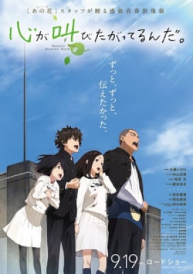

Hiện tại đang bị đứt cáp quang nên xảy ra tình trạng lag, các bạn dùng 1.1.1.1 hoặc 4G để xem đỡ lag.
Mời bạn tham gia Group tại đây! hoặc tham gia Discord tại đây! để ủng hộ AnimeVietsub
Do thiếu hút kinh phí nên quảng cáo có thể gây khó chịu, rất mong các bạn thông cảm!
Danh Sách Anime Lẻ(Movie/OVA)
Danh Sách Anime Lẻ(Movie/OVA)
MẸO SỬ DỤNG: Sử dụng chức năng Lọc Anime trên thanh công cụ để lọc những phim bạn đang cần xem chính xác nhất.
HD
Nanatsu no Taizai Movie 2: Hikari ni Norowareshi Mono-tachi Lượt xem: 131,912
Nanatsu no Taizai Movie 2: Hikari ni Norowareshi Mono-tachi
HD 9.1 1 giờ 19 phút 2021
Sau khi kết thúc Thánh Chiến, những tưởng thế giới đã hòa bình, nhưng không! Hai thế lực đã trỗi dậy. Yêu Tinh Vương...
Studio: Studio Deen
Thể loại: Supernatural , Fantasy , Adventure , Action ,
Diễn viên: Ban,
HD
Gintama: The Semi-Final Lượt xem: 126,483
Gintama: The Semi-Final
HD 9.2 02/02 2021
Movie Gintama: The Semi-Final. Phần movie ngoại truyện của Gintama The Final được công chiếu trước đó
Studio: Bandai Namco Pictures
Thể loại: Comedy , Action ,
Diễn viên: Sakata Gintoki,
HD
Chúng Tôi Không Thể Học OVA Lượt xem: 151,195
Chúng Tôi Không Thể Học OVA
HD 9.5 02/02 2019
OVA Bokutachi wa Benkyou ga Dekinai.
Studio: Silver, Arvo Animation
Thể loại: Romance , Comedy ,
Diễn viên: Furuhashi Fumino,
HD
Bikini Warriors Special Lượt xem: 104,335
Bikini Warriors Special
HD 7.6 4 phút 2015
According to the official Hobby Japan website, an unaired episode of Bikini Warriors will be bundled with the Blu-ray volume to be released on December...
Studio: feel.
Thể loại: Fantasy , Ecchi , Comedy ,
Diễn viên: Mage,
HD
Tokyo Ghoul S (Live Action 2019) Lượt xem: 98,309
Tokyo Ghoul S (Live Action 2019)
HD 3.3 97 Phút 2019
Sau khi hoà nhập vào thế giới của Ngạ quỷ, trở thành một phần của Anteiku. Kaneki vì muốn bảo vệ những người quan trọng...
Studio: Đang Cập Nhập
Thể loại: Live Action , Action ,
Diễn viên:
Nhân vật đang được cập nhật
HD
Precure Miracle Leap Movie: Minna to no Fushigi na Ichinichi Lượt xem: 19,175
Precure Miracle Leap Movie: Minna to no Fushigi na Ichinichi
HD 9.5 1 giờ 10 phút 2020
Một phần về Precure mới. Lần này nói về sự tấn công của Byogen , những sinh vật có âm mưu lan truyền bệnh tật cho trái...
Studio: Toei Animation
Thể loại: Shoujo , Fantasy , Magic , Action ,
Diễn viên: Nono Hana,
HD
Toàn Chức Cao Thủ Movie - Đỉnh Cao Vinh Diệu Movie Lượt xem: 142,782
Toàn Chức Cao Thủ Movie - Đỉnh Cao Vinh Diệu Movie
HD 8.4 1 giờ 37 phút 2019
Hai năm trước, Glory khởi đầu chỉ là một MMORPG khác, nhưng tầm ảnh hưởng trong thế giới thực của nó đã tăng lên khi...
Studio: Colored Pencil Animation
Thể loại: Game , Action ,
Diễn viên: Ye Xiu,
HD
Rurouni Kenshin: Meiji Kenkaku Romantan - Shin Kyoto-hen Lượt xem: 20,135
Rurouni Kenshin: Meiji Kenkaku Romantan - Shin Kyoto-hen
HD 10 02/02 2011
Một bản làm lại quy mô lớn về thời gian sau khi Kenshin rời Tokyo cho đến trước địa ngục của Kyoto.
Studio: Studio Deen
Thể loại: Shounen , Samurai , Drama , Historical , Action ,
Diễn viên: Himura Kenshin,
HD
Bishoujo Senshi Sailor Moon Eternal Movie 2 Lượt xem: 37,190
Bishoujo Senshi Sailor Moon Eternal Movie 2
HD 8.4 1 giờ 20 phút 2021
Tôi nghĩ rằng hình thức phim chỉ nêu ra những điểm yếu mà câu chuyện của Dream arc đã có, vì vậy hướng đi không có gì...
Studio: Toei Animation, Studio Deen
Thể loại: Shoujo , Romance , Demons , Magic ,
Diễn viên: Tsukino Usagi,
HD
Bishoujo Senshi Sailor Moon Eternal Movie 1 Lượt xem: 36,499
Bishoujo Senshi Sailor Moon Eternal Movie 1
HD 6.6 1 giờ 21 phút 2021
Khi thế lực hắc ám bao trùm Trái Đất sau nhật thực toàn phần, các Chiến binh Thủy thủ đang phân tán phải đoàn...
Studio: Toei Animation, Studio Deen
Thể loại: Shoujo , Romance , Demons , Magic ,
Diễn viên: Tsukino Usagi,
HD
Khi Nàng Thơ Yêu - Josee to Tora to Sakana-tachi Lượt xem: 390,257
Khi Nàng Thơ Yêu - Josee to Tora to Sakana-tachi
HD 9.8 1 giờ 38 phút 2020
Câu chuyện chủ yếu xoay quanh mối quan hệ của Tsuneo và Josee. Tsuneo là một sinh viên đại học, còn Josee là một cô gái trẻ...
Studio: Bones
Thể loại: Romance , Slice of Life , Drama ,
Diễn viên: Josee,
HD
Shirobako Movie Lượt xem: 14,299
Shirobako Movie
HD 6.8 1 hr 59 min 2020
Câu chuyện của bộ phim lấy bối cảnh bốn năm sau các sự kiện trong anime gốc Shirobako. Miyamori Aoi luôn bận rộn đối phó...
Studio: P.A. Works
Thể loại: Drama , Comedy ,
Diễn viên: Miyamori Aoi,
HD
Planetarian: Snow Globe Lượt xem: 13,777
Planetarian: Snow Globe
HD 8.9 36 phút 2021
Phim kể về giai đoạn trước khi diễn ra chiến tranh, lúc Yumemi vẫn còn là robot làm việc.
Studio: Okuruto Noboru
Thể loại: Sci-Fi , Drama ,
Diễn viên: Hoshino Yumemi,
HD
Healin' Good♡Precure Movie: Yume no Machi de Kyun! Tto GoGo! Dai Henshin!! Lượt xem: 20,410
Healin' Good♡Precure Movie: Yume no Machi de Kyun! Tto GoGo! Dai Henshin!!
HD 8.7 01/01 2021
Các PreCure sẽ đến thăm Tokyo trong bộ phim này sao?!Cùng đến với thế giới “mộng ước” vui nhộn nào!!Nhưng mà… mộng...
Studio: Toei Animation
Thể loại: Shoujo , Fantasy , Magic , Action ,
Diễn viên: Hanadera Nodoka,
FHD
Tại sao bà giáo lại ở đây?! OVA Lượt xem: 212,102
Tại sao bà giáo lại ở đây?! OVA
FHD 8.4 11 phút 2019
Một tập riêng lẻ nói về chuyến đi sau lễ tốt nghiệp, ở đây trải qua nhiều chuyện lắm haha
Studio: Tear Studio
Thể loại: Seinen , School , Ecchi , Comedy ,
Diễn viên: Kojima Kana,
HD
Isekai Cheat Magician: Yoiboshi no Matsuri to Majutsushi Lượt xem: 108,712
Isekai Cheat Magician: Yoiboshi no Matsuri to Majutsushi
HD 8.7 23 phút 2021
Special của Isekai Cheat Magician.
Studio: Encourage Films
Thể loại: Fantasy , Adventure , Action ,
Diễn viên:
Nhân vật đang được cập nhật
HD
Evangelion: 3.0+1.0 Thrice Upon a Time Lượt xem: 154,493
Evangelion: 3.0+1.0 Thrice Upon a Time
HD 9.8 2 giờ 35 phút 2021
Sau khi phải chịu đựng một hậu quả nặng nề, khiến cho Shinji, Asuka và Rei bị mắc kẹt lại, vì thế bọn họ phải tìm...
Studio: Khara
Thể loại: Sci-Fi , Psychological , Drama , Mecha , Action ,
Diễn viên: Souryuu Asuka Langley,
HD
Tonikaku Kawaii: SNS Lượt xem: 269,714
Tonikaku Kawaii: SNS
HD 9.8 24 phút 2021
Khi Nasa được gọi đến để làm việc đột ngột, Tsukasa phải đối mặt với đêm đầu tiên cô đơn kể từ khi họ kết...
Studio: Seven Arcs
Thể loại: Shounen , Romance , Comedy ,
Diễn viên: Yuzaki Tsukasa,
HD
Natsume Yuujinchou: Ishi Okoshi to Ayashiki Raihousha Lượt xem: 75,755
Natsume Yuujinchou: Ishi Okoshi to Ayashiki Raihousha
HD 10 51 phút 2021
“Ishi Okoshi”, Natsume sẽ gặp tiểu quái có tên Mitsumi trong khu rừng. Mitsumi được giao nhiệm vụ đánh thức youkai Iwatetsu...
Studio: Shuka
Thể loại: Shoujo , Slice of Life , Supernatural , Drama , Demons ,
Diễn viên: Natsume Takashi,
HD
Doraemon Movie 04: Nobita no Kaitei Kiganjou Lượt xem: 67,238
Doraemon Movie 04: Nobita no Kaitei Kiganjou
HD 9.4 1 giờ 35 phút 1983
 HD
Tiếng Hát Từ Trái Tim Lượt xem: 48,255
Tiếng Hát Từ Trái Tim
HD 9.1 1 giờ 59 phút 2015
Naruse Jun, một con bé vui vẻ hoạt bát nhưng lại có tật nói nhiều. Chính vì tật xấu đó đã vô tình phá hoại chính gia đình...
Studio: A-1 Pictures
Thể loại: School , Romance , Drama ,
Diễn viên: Naruse Jun,
HD
Kakushigoto Movie Lượt xem: 32,195
Kakushigoto Movie
HD 9.4 1 giờ 20 phút 2021
Kakushi Gotou là một họa sĩ truyện tranh nổi tiếng với những tác phẩm được biết đến với nội dung không phù hợp. Vì...
Studio: Ajia-Do
Thể loại: Shounen , Slice of Life , Comedy ,
Diễn viên: Gotou Kakushi,
HD
Shin Kimagure Orange☆Road: Soshite, Ano Natsu no Hajimari Lượt xem: 21,597
Shin Kimagure Orange☆Road: Soshite, Ano Natsu no Hajimari
HD 1.7 1 giờ 35 phút 1996
HD
Sayonara Watashi no Cramer Movie: First Touch Lượt xem: 33,116
Sayonara Watashi no Cramer Movie: First Touch
HD 9.8 1 giờ 44 phút 2021
Nozomi Onda, 14 tuổi, chỉ có một điều trong đầu: chơi bóng đẹp. Chỉ có một vấn đề: bất kể cô ấy khao khát được...
Studio: LIDENFILMS
Thể loại: Shounen , School , Romance , Sports ,
Diễn viên: Onda Nozomi,
BD
Lupin III: Cagliostro no Shiro Lượt xem: 17,642
Lupin III: Cagliostro no Shiro
BD 10 1 giờ 40 phút 1979
Lupin 3: Castle of Cagliostro - "Lâu đài Cagliostro" là anime dài màn ảnh rộng đầu tiên thực sự có ấn tượng của đạo diễn...
Studio: None found, add some
Thể loại: Shounen , Comedy , Adventure ,
Diễn viên: Lupin III Arsene,
HD
Hibike! Euphonium Movie 3: Chikai no Finale Lượt xem: 38,471
Hibike! Euphonium Movie 3: Chikai no Finale
HD 9.6 1 giờ 41 phút 2019
Một năm mới báo hiệu một khởi đầu mới và đó dường như là trường hợp của ban nhạc hòa nhạc của trường trung học...
Studio: Kyoto Animation
Thể loại: School , Drama , Music ,
Diễn viên: Oumae Kumiko,
HD
Dịch Vụ Chuyển Phát Phù Thủy Kiki Lượt xem: 87,836
Dịch Vụ Chuyển Phát Phù Thủy Kiki
HD 9.6 1 giờ 43 phút 1989
Bộ phim bắt đầu ngay thời điểm Kiki – một cô bé phù thuỷ thực tập – đủ tuổi để rời gia đình và đến một nơi...
Studio: Studio Ghibli
Thể loại: Romance , Fantasy , Drama , Comedy , Adventure , Magic ,
Diễn viên: Kiki,
HD
Kimi dake ni Motetainda. Lượt xem: 27,374
Kimi dake ni Motetainda.
HD 9.8 54 phút 2019
Bộ phim sẽ tập trung vào cuộc sống thanh xuân của năm nam sinh cao trung xinh trai. Mỗi người đều có những đặc điểm khiến...
Studio: Signal.MD
Thể loại: School , Slice of Life , Drama ,
Diễn viên:
Nhân vật đang được cập nhật
HD
Cider no You ni Kotoba ga Wakiagaru Lượt xem: 50,244
Cider no You ni Kotoba ga Wakiagaru
HD 9.8 1 giờ 27 phút 2021
Đây chính là câu chuyện "chàng gặp nàng" mô tả âm nhạc đã thu hẹp khoảng cách giữa Cherry, một cậu con trai tệ hại trong...
Studio: Signal.MD, Sublimation
Thể loại: Music ,
Diễn viên: Cherry,
HD
Fate/stay night Movie: Heaven's Feel - I. Presage Flower Lượt xem: 158,099
Fate/stay night Movie: Heaven's Feel - I. Presage Flower
HD 9.1 120 phút 2017
Emiya Shirou là một pháp sư trẻ tuổi đang theo học tại Học viện Homurahara ở thành phố Fuyuki. Một ngày nọ, sau khi dọn dẹp...
Studio: ufotable
Thể loại: Supernatural , Fantasy , Magic , Action ,
Diễn viên: Saber,